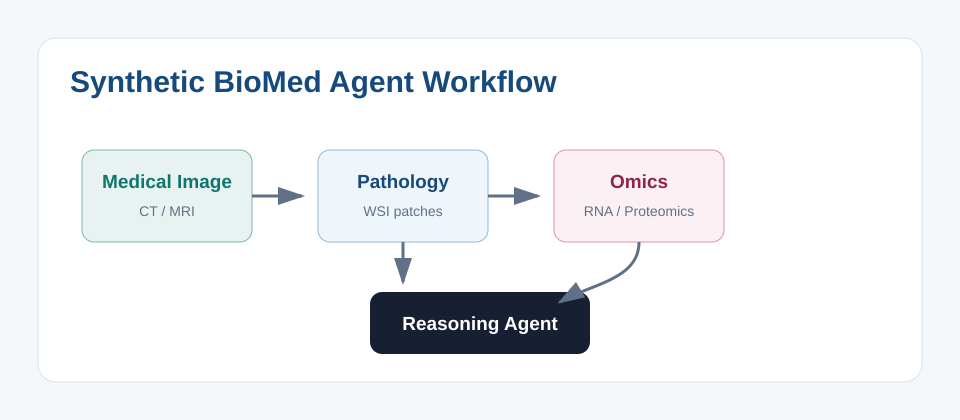

论文假设
本虚构研究提出 BioMed Agent 可以同时读取医学影像、病理图像和组学摘要，并通过检索增强工作流生成可解释的研究假设。

图 1. 测试附件图像：该路径应在构建后被改写为 assets/workflow.svg。
测试指标
3
模态输入
2
附件图像
1
自动构建入口
验证目标
构建后应生成 notes/synthetic-biomed-agent-test/index.html，并复制附件到
notes/synthetic-biomed-agent-test/assets/。如果页面中的两张图能显示，说明附件目录流程已通过。